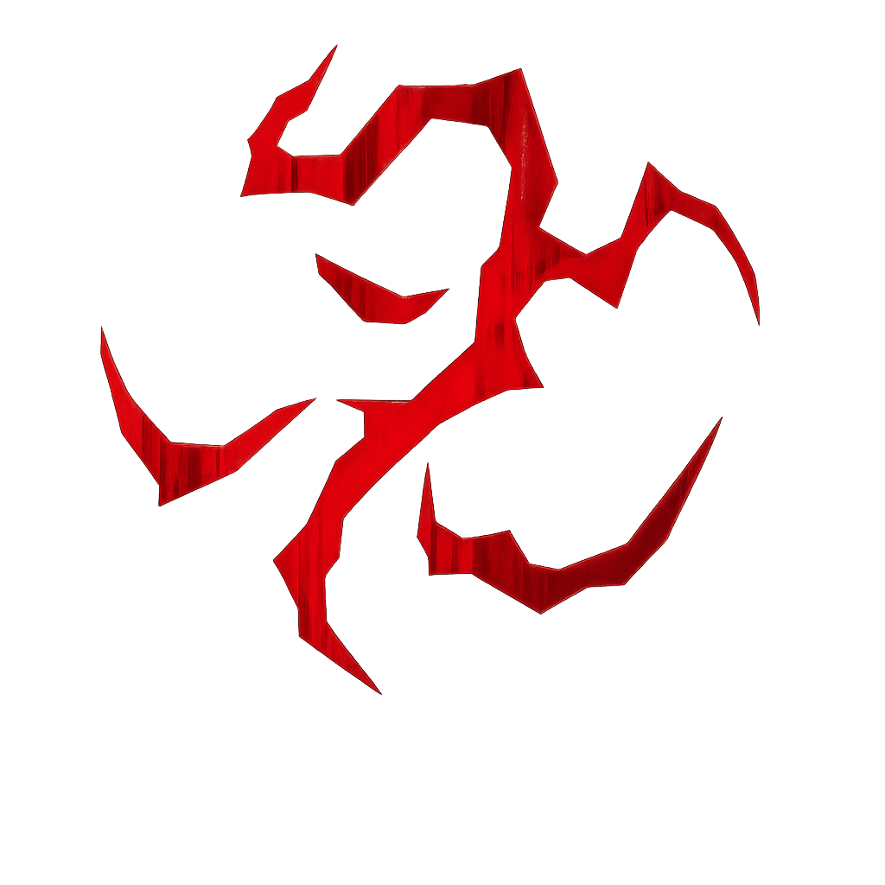
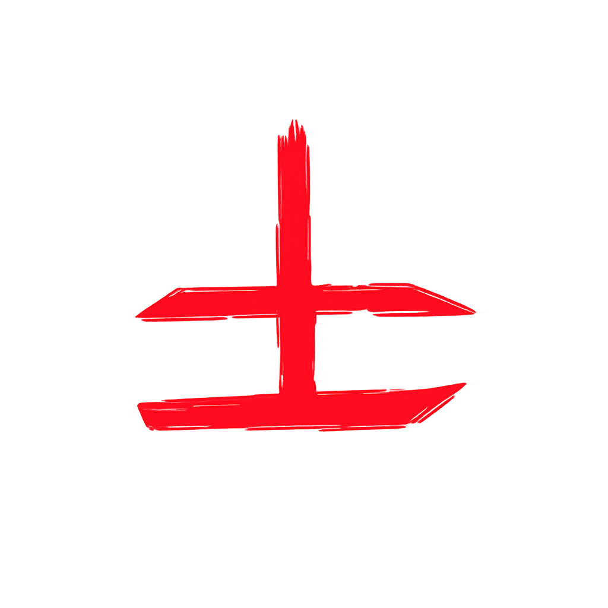
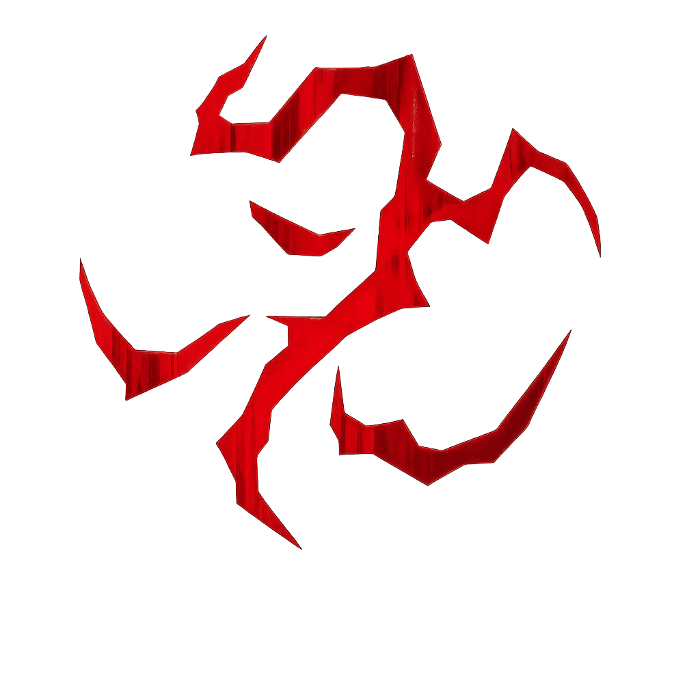
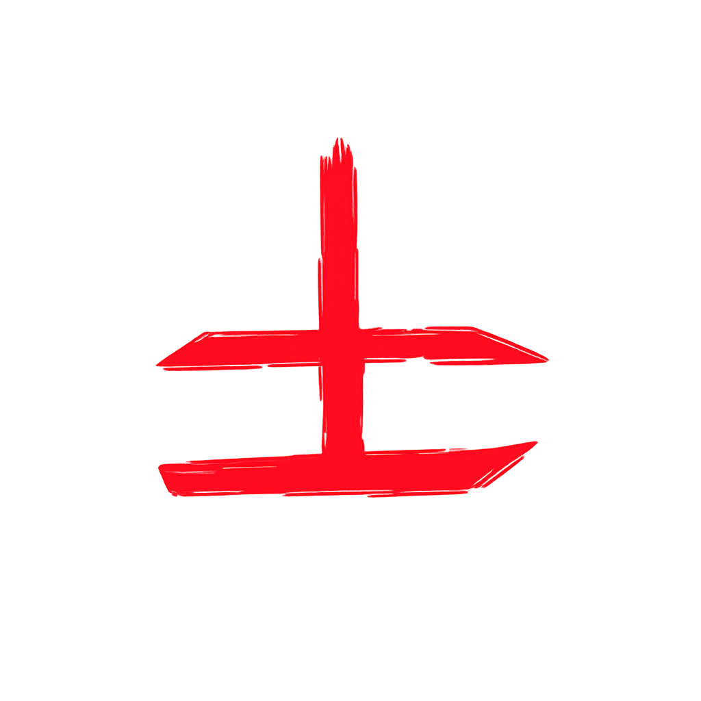
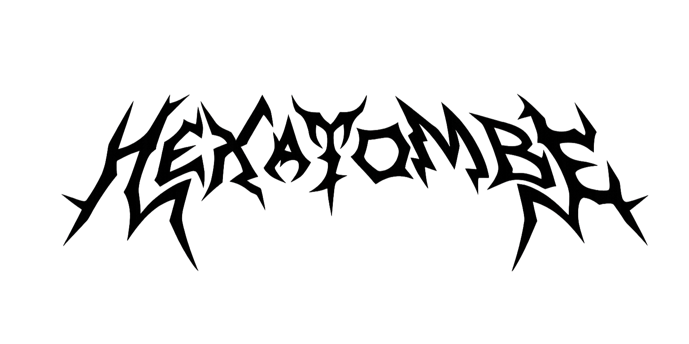
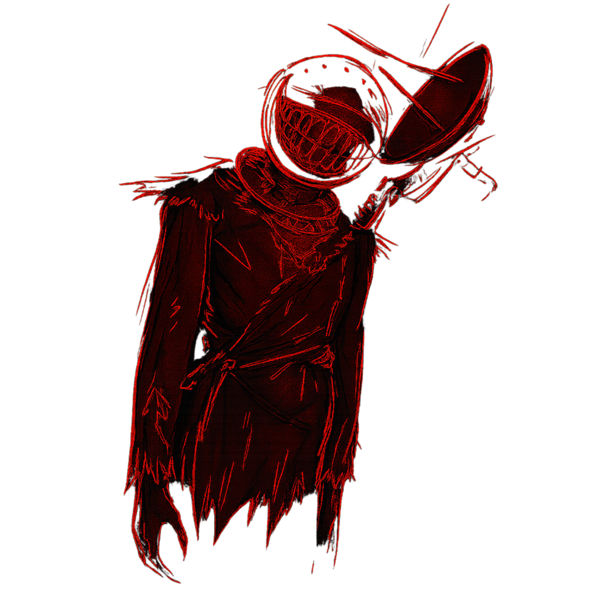
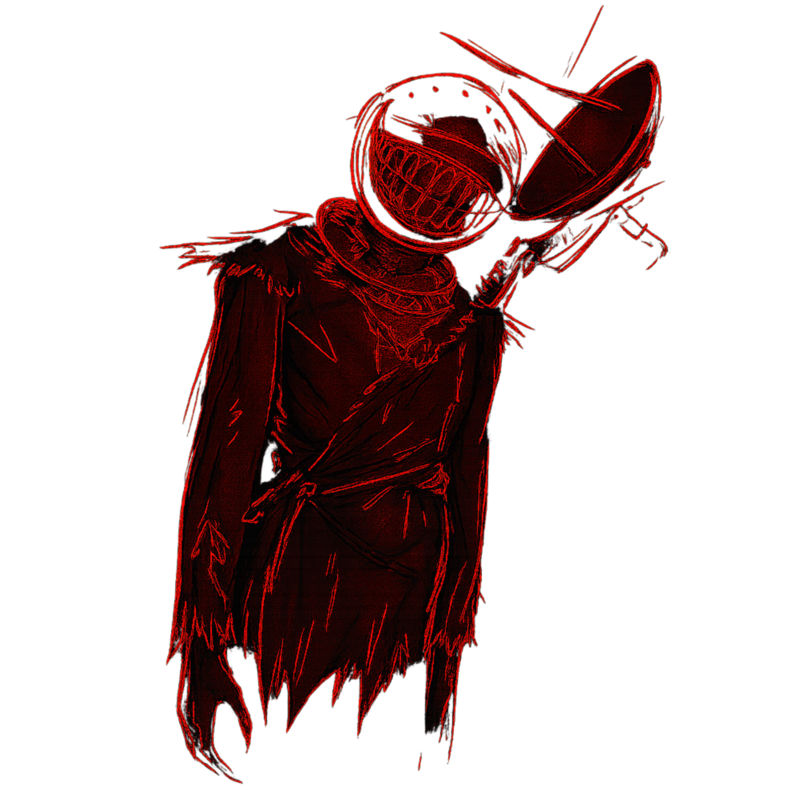

Ninguém sabe ao certo quando começou, mas todos sabem que o Hexatombe está cada dia mais perto. Os sinais já são vistos por quem tem sensibilidade suficiente: o ar fica pesado, as sombras parecem se mover sozinhas e sussurros começam a surgir onde deveria haver silêncio.
Os estudiosos do paranormal descrevem o Hexatombe como o fim da barreira, o momento em que o Outro Lado finalmente atravessa sem encontrar resistência. Alguns dizem que será como uma aurora negra rasgando o céu. Outros afirmam que o mundo simplesmente acordará diferente, tomado por fenômenos impossíveis.
 


O que é o Hexatombe?
A Hexatombe… é difícil de explicar pra quem nunca sentiu ela de perto. Não é só um ritual, nem só um massacre — é uma brecha. Quando a Hexatombe acontece, o véu entre o nosso mundo e o Outro Lado se rasga, e tudo que devia ficar escondido começa a atravessar. O ar fica pesado, o tempo parece falhar, e coisas que não têm nome começam a olhar de volta pra você. Alguns cultos fazem isso de propósito, buscando poder. Outros tentam impedir, mas quase sempre tarde demais. A verdade é simples: quando você vê uma Hexatombe se formando… você entende que nada que conhece é seguro, e que a realidade não é tão sólida quanto parece.